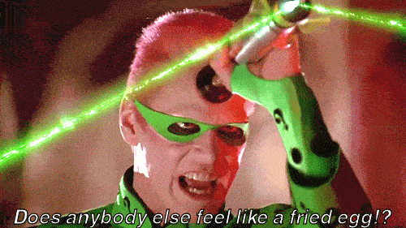

Corey is an iconoclast and the author of 'Man's Fight for Existence'. He believes that the key to life is for men to honour their primal nature. Visit his new website at primalexistence.com


I used to love films. While other guys my age watched them for mindless fun, I viewed them as works of art that required scrutiny and attention to details for greater appreciation. I later even took a course on history of films in my university as an elective.
But now, my views on films as a whole have changed as I learned to see Hollywood for what it really is: a giant tumour to our culture and society. The next next time you decide to put yourself through another Hollywood production, consider these six points:
While the budgets have gone up, the quality of Hollywood films have gone down. Hollywood has produced many classics in the past that I still regard highly, but all the junk they release today are shallow and predictable because they have been designed to appeal to the lowest common denominator.
The problem is that Hollywood has become too successful. They mastered the art of money-making using the same cookie-cutter story arc of Good vs. Evil that usually features characters from comic books graphic novel masterpieces. And the business model is just too profitable for them to try and experiment creating different themes and styles. Their apparent lack of imagination is demonstrated by all the horrible remakes and revivals that make going to the movies a complete waste of money and time.

The only thing more pathetic than sports fans are movie fans.
In comparison, I am always amazed by how refreshingly original foreign films are. Foreign films do exactly what motion pictures are supposed to do by offering new perspectives and insights, by stirring up your creative force, and by reaching deep into your soul. If you insist on watching films, go for the oldies or watch quality foreign films. Leave the new Hollywood releases for the brainless sheeple to enjoy.
And guess where all the money you’re wasting is going to? To finance the lavish lifestyles of all the Hollywood degenerates, of course. While American peons are dishing out their hard-earned cash for the privilege of sitting in front of a flickering screen for couple of hours, Hollywood entertainers and producers are using that money to buy their next yacht, private island, and $18 million dress. Along with politicians and multi-billionaires, they have become the new royalty in today’s society where the wealth gap is at its greatest ever.

Did Jennifer Lawrence join the Harvey Weinstein club by serving all his sexual desires?
Also know that the people who you are financing are somewhere between prostitutes and politicians in terms of moral rectitude. Sex scandals, Scientology, Satanism, and drug abuses among the entertainers are already well known, but there are also widespread rumours of the casting couch, and rampant pedophilia.
And this is just what we know. Who knows what more debauchery lurks beneath their thin layer of superstar lives? Us commoners are simply expected to feign ignorance and come back for the sequels.

DiCaprio likes to lecture us plebeians to mind our carbon footprint while flying around in his private jet.
Not content with getting high on money, fame, and drugs, our 21st century jesters feel the need to boost their egos with the moral superiority high. And while they say nothing about the bankrupt morality of their fellow actors, they barely hide their contempt for white men, traditional values, and Christianity. But not only that, they also love taking their precious leisure time to enlighten us lowly subjects with matters ranging from climate change and race issues to feminism.
Some uppity twat with a messiah complex teaching us ignorant neanderthals to do more for women.
These entertainers, with their superiority complex, believe that their fame make them qualified enough to lead us and solve the problems of the world. Can you imagine the horrible dark age we’d be ushered into if it weren’t for the guidance of these guardians of the universe? Neither can I.
Patriarchybusters?
Among the things Hollywood likes to offer their guidance on are issues of social justice and feminism. Back in the day, totalitarian states spent their own money creating propaganda to brainwash the masses; today, people pay Hollywood to get voluntarily brainwashed by them. With girl-power trash like the new Mad Max and the new Star Wars films, Hollywood works hard in their social engineering program to erase men as masculine leaders while replacing them with macho female characters who could do it all without a man.
If you’re still not disgusted by Hollywood’s blatant support of social justice, try watching this condescending piece that propagates feminist lies of rape culture:
In real life, if you do this to a woman to make her fall in love with you, she will call the police.
Even without the feminist agenda, Hollywood inseminates dangerously wrong ideas in regards to attracting women and developing relationships with them. Take, for example, the romantic film beloved by women: The Notebook. There’s a ridiculous scene where Ryan Gosling stalks Rachel McAdam and asks her out by threatening her with suicide. What kind of message is that sending to young and naive men who have never been taught how to court women?
Even animations that cater to family expose young boys with not-so-hidden messages about what male-female relationships are supposed to be like. I recently watched WALL-E and here’s a brief synopsis of what I’ve observed: WALL-E, the dusty, working-class robot, falls in love with EVE, a much more advanced robot that is highly intelligent, confident, strong, aggressive, sophisticated, pristine, and beautiful all in one (basically all that today’s young American women pretend to be but are not).
The timid and clumsy WALL-E grovels and follows EVE around, trying to get her attention in spite of how dismissive she is—she is too busy with her job to even acknowledge him. Long story short, EVE finally realizes how much of a nice-guy WALL-E is and rewards him with the affection that he had desperately sought. The message here is clear: be a supplicant male who worships woman regardless of how she treats you and she might eventually fall in love with you.
Yeah right.

Meanwhile, movies like Frozen teach girls that sisterly love is more important than anything greedy, duplicitous men and the nice guys have to offer. I can go on and on with examples from other films that feature weak male characters supporting strong and independent female characters. You have to pause and wonder just what kind of future Hollywood is paving for the upcoming generation.
Those who claim that movies are just movies and that entertainments don’t influence our minds don’t understand how mental conditioning works. Companies wouldn’t spend millions of dollars on 30-second ads if they didn’t have any effect on human thought and behaviour.
Do you know where they use movies to keep people under control? Prisons.
A snippet from this article reveals:
In 1992, Newsweek reported, “Faced with severe overcrowding and limited budgets for rehabilitation and counseling, more and more prison officials are using TV to keep inmates quiet.” Joe Corpier, a convicted murderer, was quoted, “If there’s a good movie, it’s usually pretty quiet through the whole institution.” Both public and private-enterprise prisons have recognized that providing inmates with cable television can be a more economical method to keep them quiet and subdued than it would be to hire more guards.
Not only is Hollywood a money-making propaganda machine, but it also functions as the opium of choice for the masses. Every movie you watch induces low level alpha waves in your brain that makes you dull, passive, and suggestible. While under the influence, you are to forget about all the real-life issues and submit yourself before the behemoth who mesmerizes you with flashy images.

Why think for yourself when you can just watch some movies to pacify your mind and vent out your clever analysis on IMDB? Why stand up for yourself and fight against injustice when you can watch some superheros do it on screen? Why challenge yourself and bother accomplishing anything when you can do it vicariously through fake characters and fake situations while sitting on your ass?
Since the billionaire elites at the top can take care of all the world’s problems just like Bruce Wayne and Tony Stark, us worthless peasants are expected to shut up and continue slaving away for the system. We are to remain as complacent drones without a will of our own while believing that our overlords have our best interests in mind.

Are you getting the message yet?
Sometimes I feel as though Hollywood is openly mocking us with movies like The Matrix and Inception to show just how deeply we’re plugged in and dreaming, both unwilling and unable to wake up from their grasps, and not being able to tell what’s real and what’s not.
These days, I barely watch any films, and when I do, it’s almost never a Hollywood production. Whatever few decent films they throw at us once in a while is not enough to make me want to support their machine; I simply have far better uses for my time. And I think that many men today can do themselves a favor too by taking another, different kind of red pill.
Read More: It’s A Hundred Times Easier To Come Out As Gay Or Transsexual Than As A Conservative In Hollywood